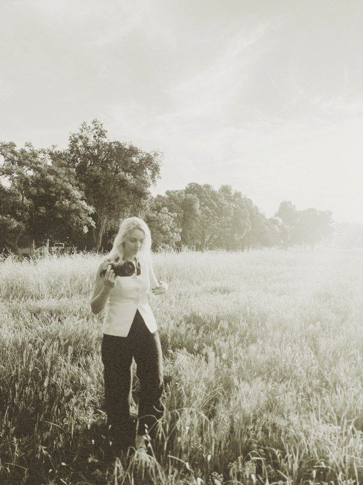
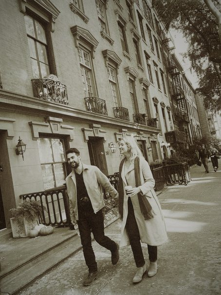
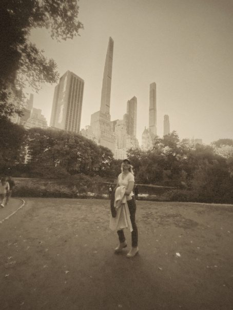
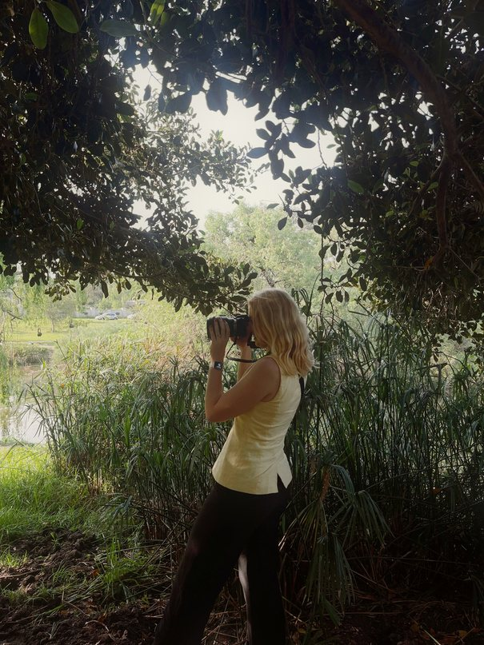

▶ 20 ▶Get to know my why
I believe that I was created by the Creator to create.
I seek to follow Jesus in everything I do.
I picked up a camera at the age of 14 and haven’t really stopped since. My love for photography has grown out of a love for making things beautiful. I strive for every photo to feel alive - full of intention, emotion and feeling.
My work is inspired by the nostalgia of old films with lots of warmth, raw emotion and dreamy light. I prefer this to a rigid, ultra-polished approach and I rather seek to document the moment as it’s felt.
Photos are such a unique gift because you never know when you might have this moment again - and I think that every season of life is worth capturing.
About me
I’m Joy
I was born and raised in Cape Town, South Africa, and I’d love to visit Scotland one day to explore my heritage.
One of my biggest blessings in life, was getting married at a young age to my high-school sweetheart.
Hobbies
I am what you might call a true romantic: I paint, sculpt, write, studied ancient history and languages etc.
My favorite piece of literature is Tolkien’s Silmarillion.
Cooking is my love-language. And I would love to live on a farm one day.
Photography
From picking up a DSLR at the age of 14, to finally getting a camera of my own, to running a photography business - there hasn’t been a moment where I’ve not loved the craft of photography.
I love photos that tell a story of depth and emotion.
Also
Alongside photography, my husband and I serve at a local church where we lead the next generation ministries.
I will not force Jesus onto anyone - but if you want to hear about being a disciple of Jesus, ask me about it!